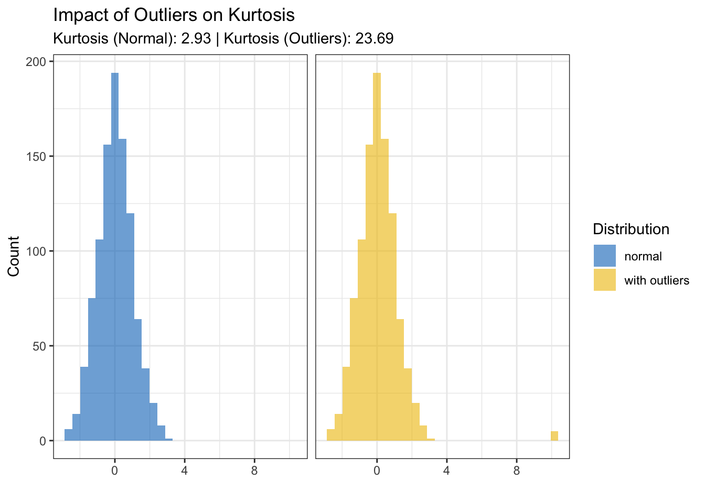
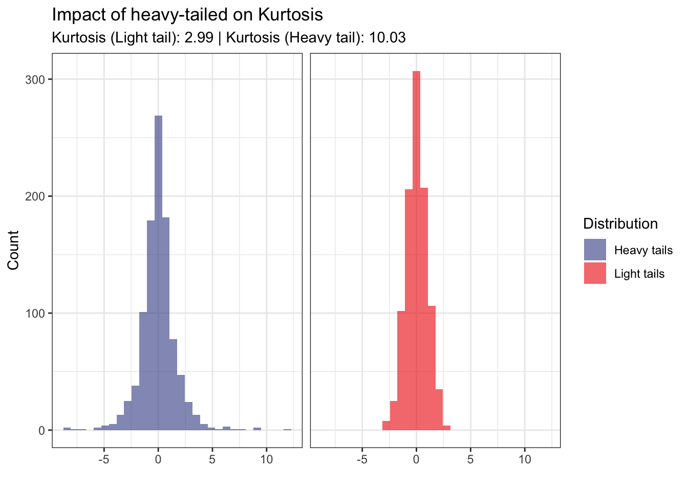

Traditional measures like kurtosis have long been used to capture the weight of the tails of a distribution. However, kurtosis comes with limitations, particularly its sensitivity to outliers and lack of robustness. In this blog post, we will explore two robust measures for tail weight.
In the world of data analysis, understanding the tail behavior of a distribution is critical for identifying potential outliers. Traditional measures like kurtosis have long been used to capture the weight of the tails of a distribution. However, kurtosis comes with limitations, particularly its sensitivity to outliers and lack of robustness. In this blog post, we will explore two robust measures for tail weight:
Quantile tail weight measure
Medcouple tail weight measure
Let’s begin with why tail weight matters and examine the limitations of traditional kurtosis. Light-tailed distributions (e.g., normal distribution) have very few extreme values, whereas heavy-tailed distributions (e.g., Cauchy, Student’s t-distribution) contain more extreme values, and outliers occur more frequently. If a measure of tail weight is unreliable or sensitive to extreme observations, the analysis of the underlying data distribution would be inaccurate.
Kurtosis measure
Kurtosis (denoted \(\beta_2\)), which is derived from the 4th moment of a distribution, measures the degree of peakedness and tail heaviness relative to a normal distribution. For a normal distribution, \(\beta_2 = 3\), however excess kurtosis (\(\gamma_2\)) is often used to center the normal reference value at 0.
where, \(\mu\) is the mean of \(X\), and \(\sigma^2\) is its variance.
The concept of kurtosis was first introduced by Karl Pearson in the early 1900s as a measure to characterize the shape of probability distributions, particularly their “peakedness” and tail behavior. Pearson later coined the terms platykurtic (\(\gamma_2 < 0\)), mesokurtic (\(\gamma_2 = 0\)), and leptokurtic (\(\gamma_2 > 0\)) to classify distributions based on their kurtosis levels. Despite its usefulness, kurtosis has a notable limitation: it is highly sensitive to outliers. Even a single extreme value can disproportionately inflate the kurtosis, potentially leading to distorted interpretations and misleading conclusions about the data’s underlying distribution.
Show the code
set.seed(123)normal_data <-rnorm(1000)outlier_data <-c(normal_data, rep(10, 5))kurtosis_normal <-kurtosis(normal_data)kurtosis_outlier <-kurtosis(outlier_data)tibble(value =c(normal_data, outlier_data),type =rep(c("normal", "with outliers"), c(1000, 1005)) ) %>%ggplot(aes(x = value, fill = type)) +geom_histogram(bins =30, alpha =0.6, position ="identity") +facet_wrap(vars(type)) + ggsci::scale_fill_jco() +theme_bw() +labs(title ="Impact of Outliers on Kurtosis",subtitle =paste("Kurtosis (Normal):", round(kurtosis_normal, 2), "| Kurtosis (Outliers):", round(kurtosis_outlier, 2)), x ="", y ="Count",fill ="Distribution", ) +theme(strip.background =element_blank(),strip.text.x =element_blank() )

Notice how adding a few extreme outliers significantly increases the kurtosis value. This demonstrates the lack of robustness of kurtosis. To overcome the sensitivity of kurtosis, Brys et al. (2006) introduced two robust measures: quantile weight (QW) and medcouple weight (MW). Both rely on robust statistical properties and are less affected by outliers.
Quantile tail weight measure
QW measure evaluates the weight of the tails using quantiles. It is based on the interquartile range (IQR) and extreme quantiles. The numerator focuses on extreme quantiles (tail behavior). The denominator normalizes using the IQR, making the measure robust to outliers. The quantile weights, comprising the left quantile weight (LQW) and the right quantile weight (RQW), and are given by:
with \(0<p<\frac{1}{2}\) and \(\frac{1}{2}<q<1\), which define the degree of robustness one is willing to attain.
They have a breakdown value of 0.125, meaning that they are resistant to the influence of up to 12.5% of outliers or contaminated data. The concept of quantile weights is derived from quartile skewness, introduced by D.V. Hinkley in 1975. Quartile skewness measures the skewness or asymmetry of a distribution by comparing the differences between the quartiles, which are robust measures of location and scale. Specifically, the quantile weights are calculated when applying quartile skewness to either the left half or the right half of the probability mass, divided at the median of the univariate distribution. The left quantile weight (LQW) is the proportion of the data below the median, divided by the expected proportion (0.5) if the data were normally distributed. The right quantile weight (RQW) is the proportion of the data above the median, divided by 0.5. Values closer to 0 indicate lighter tails compared to the normal distribution, values closer to 1 signify heavier tails compared to the normal distribution, whereas values significantly greater than 1 suggest the presence of outliers or extreme values in the respective tail.
Medcouple tail weight measure
MW measure uses the medcouple statistic (MC), which is a robust measure of skewness. It focuses on tail asymmetry and provides information about the heaviness of each tail. The medcouple is defined as a scaled median of all pairwise slopes between data points. It is robust to extreme observations and does not require a predefined model. The resulting MW measure evaluates the extent of tail heaviness in a distribution, particularly useful when the data is skewed.
The left and right medcouples are a robust measure of tail weight based on the median and the medcouple (Brys et al. 2004), which is a kernel estimator of the cumulative distribution function (CDF). The left and right medcouples are robust to outliers and have a breakdown value of 25%. Specifically, the left medcouple (LMC) measures the skewness in the lower tail of the distribution, while the right medcouple (RMC) measures the skewness in the upper tail. LMC and RMC, are defined as:
\[
\text{LMC} = -\text{MC}(x < m), \quad \text{RMC} = \text{MC}(x > m)
\]
with \(m\) the median of \(X\). LMC and MC close to 0 indicate a symmetric distribution or light tails. Positive values indicate right-skewness or a heavier right tail, whereas negative values indicate left-skewness or a heavier left tail.
Show the code
set.seed(123)heavy_tail_data <-rt(1000, df =3) light_tail_data <-rnorm(1000) kurt_heavy <-kurtosis(heavy_tail_data)kurt_light <-kurtosis(light_tail_data)qtw_heavy <- specProc::quantile_weight(heavy_tail_data)qtw_light <- specProc::quantile_weight(light_tail_data)mtw_heavy <- specProc::medcouple_weight(heavy_tail_data)mtw_light <- specProc::medcouple_weight(light_tail_data)data_frame(value =c(heavy_tail_data, light_tail_data),type =rep(c("Heavy tails", "Light tails"), each =1000) ) %>%ggplot(aes(x = value, fill = type)) +geom_histogram(bins =30, alpha =0.6, position ="identity") +facet_wrap(vars(type)) + ggsci::scale_fill_aaas() +theme_bw() +labs(title ="Impact of heavy-tailed on Kurtosis",subtitle =paste("Kurtosis (Light tail):", round(kurt_light, 2), "| Kurtosis (Heavy tail):", round(kurt_heavy, 2)),x ="", y ="Count", fill ="Distribution" ) +theme(strip.background =element_blank(),strip.text.x =element_blank() )

The plot above highlights the results, demonstrating the effectiveness of the QW and MW methods in handling heavy-tailed distributions. In particular, these methods prove to be robust and efficient when analyzing data characterized by extreme values or pronounced tail behavior.
Methods
Light tails
Heavy tails
\(\gamma_2\)
0.01
7.03
LQW/RQW
0.10/ 0.21
0.34/ 0.17
LMC/RMC
0.22/ 0.22
0.30/ 0.34
Conclusion
Kurtosis, while popular, is not always the best measure of tail weight due to its sensitivity to outliers. Robust alternatives like the quantile tail weight and medcouple tail weight measures provide more reliable insights, particularly in the presence of heavy-tailed or skewed data. Moreover, the LMC and RMC measure do not require the choice of any additional parameter, whereas for the LQW and RQW measures required tuning \(p\) and \(q\) parameters.
Reference
Brys, G., Hubert, M., and Struyf, A. (2006). Robust measures of tail weight. Computational Statistics & Data Analysis, 50, 733-759.
Hinkley, D.V., (1975). On power transformations to symmetry. Biometrika, 62, 101–111.